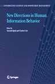

|  |
| BOOK AND SOFTWARE REVIEWS | ||||
Spink, Amanda and Cole, Charles (Eds.). New directions in human information behaviour. Dordrecht: Springer, 2006. vi, 254 pp. ISBN 1-4020-3667-1. EUR 85.55.
New directions is an exciting starting point for a book that focuses on people's need for and use of information. It suggests that the field is consolidating and that it is time to explore new avenues of approach and other theoretical perspectives than those used hitherto and to investigate the changing information seeking contexts of a dynamic society.
Although the term 'human information behavior', (HIB), seems to have been adopted to describe research concerned with how people deal with information the term has a slightly old-fashioned ring to it, as if we were trying to legitimate our research field by connecting it implicitly to traditional behaviourist research on animals or to computer research. It gives a slight impression that 'HIB' is restraining the 'new directions' but this is perhaps only an impression.
With the goal of capturing the variety of approaches, theories and models that are currently being used in information behaviour research the book has been divided into five sections. The first section gives an overview of the book and the final section attempts to integrate the new directions discussed in the main sections of the book into a model for better understanding the ways in which people engage with information. Sections two, three and four are thematic and consist of three or four chapters that exemplify each theme. Section two discusses evolutionary and social frameworks used for investigating people's information behaviour in different historical contexts, different cultural contexts and in contexts characterised by different demographic factors. Section three is devoted to different spatial and collaborative HIB frameworks, for example, in workplaces, in localities such as clinics, cafés, waiting rooms and the Internet chat rooms. The point in common in the chapters of the fourth section is a focus on the dynamic, interactive nature of information seeking and use in digital environments where attention is paid to concepts such as multi-tasking and non-linear information seeking.
The contributors to the book have been culled mainly from The United States and Canada (six chapters) and the U.K. (three chapters) together with one chapter by Scandinavians. The main authors are all well established researchers in information behaviour research. The geographical distribution of the authors perhaps reflects the dynamism of different research environments, perhaps not. It would have been an interesting issue to discuss in the introduction.
The strength of the book to my mind lies in the diversity of information behaviour that is presented in the different studies, together with the methods and theoretical perspectives used. The effect is one of a stimulating richness in research characterised by a generous acceptance of the value of different theoretical and methodological perspectives. However, the question arises whether the directions taken in the different studies are all that new or in what respects they may be considered new? In some cases the new directions do not seem to entail more than the introduction of concepts or terminology from other disciplines or more precise sub-categorisations of existing concepts. However, there are interesting juxtapositions in the book, for example, in the contrast and similarities between the chapter on information behaviour in pre-literate societies by Madden, et al. and Nicholas, et al.'s chapter on the digital information consumer. They bring together the socially interactive nature of information seeking practices and this is perhaps the most distinct new direction in information behaviour research apart from the given themes. The concept of information practices are exemplified in Talja's and Hansen's study where information sharing at workplaces is investigated and in McKenzie's study of textually mediated information practices in midwifery clinics. Other interesting developments include a view of information seeking as non-linear, presented by Allen Foster. Taken together with Spink and Park's chapter, where the concept of multi-tasking is used to emphasise how the interplay between work tasks gives rise different forms of information behaviour, these chapters open up areas for future research from the perspective of information behaviour as a complex, interactive mosaic. The concept of an information mosaic is perhaps not entirely new but it is charged with life in the book by the various contributions.
On the whole, I found the book enjoyable; the studies are varied, the book is well-written and accessible and I think it will be found both useful and stimulating by scholars and students. My reservations are concern over the apparent dominance of Anglo-American research in the discipline - might there not be something missing? And, on a lower key, the title, which promises a little more than it delivers.
Frances Hultgren
Doctoral candidate
Swedish School of Library and Information Science
University College of Borås and Gothenburg University
May 2006
How to cite this review
Hultgren F. (2006). Review of: Spink, A. and Cole, C. (Eds.). New directions in human information behaviour. Dordrecht, Netherlands: Springer, 2006. Information Research, 11(4), review no. R232 [Available at: http://informationr.net/ir/reviews/revs232.html]